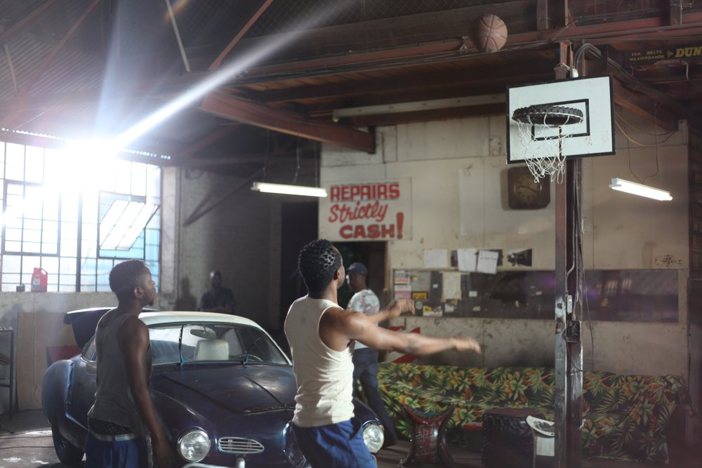
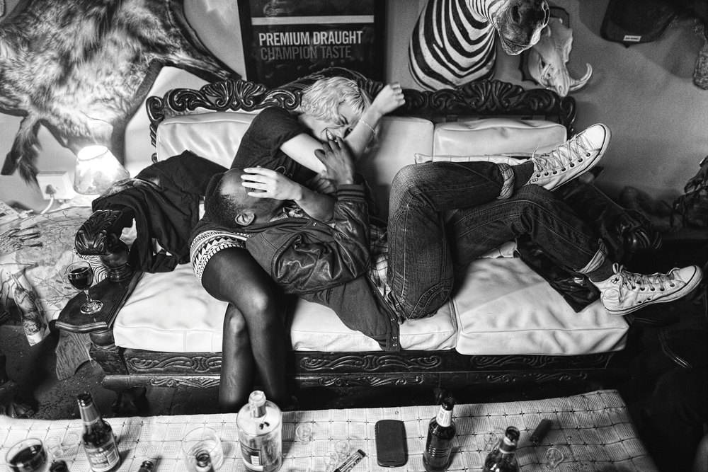
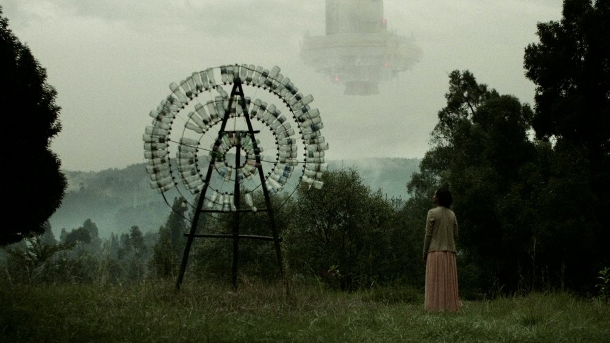

Shown at Øksnehallen
Films at Øksnehallen
Two cinemas in the hall: documentaries every day, and a feature film every Wednesday evening.

Alongside the works, the exhibition ran two cinemas in Øksnehallen. The documentary cinema showed a daily programme on Africa’s creative scenes, from music and dance to film and art; from 22 June to 27 July 2016 the feature-film theatre showed a new film every Wednesday evening.
The films are listed here as they were screened, with stills from four of the Wednesday films.
Text and lines are draft, from the 2016 catalogue. Stills © the films’ producers; Mukwano’s still is in the folder but left out, so that the row of stills stays in threes.
Every day: the documentary cinema
Documentaries and a series on the continent’s creative scenes, shown in turn through the day.
- AfripediaA documentary series in five parts on the rising creative generation in Ghana, Kenya, South Africa, Senegal and Angola.
- A Kind of ParadiseAfrica’s cultural voices, from Chimamanda Ngozi Adichie to artists, poets and musicians in six countries.
- Black PresidentThe exiled Zimbabwean artist Kudzanai Chiurai, and the responsibility of African artists in a globalised art world.
- This Is NollywoodThe Nigerian film industry, followed through the director Bond Emeruwa’s attempt to make a feature film in nine days.
- Movement (R)evolution AfricaContemporary African choreographers at work in the studio and on stage, among them Germaine Acogny and Faustin Linyekula.
- El Foukr R’AssemblyA short film on a group of Algerian musicians, and on music that links the Maghreb with the rest of the continent.
- An African City, season 1A web series on five Ghanaian and Nigerian women who return to the continent.
Wednesday evenings: the feature films
From 22 June to 27 July 2016, one film each Wednesday at 7 pm, opening with a pre-screening of BUGS with its director present.



- BUGSInsects as food, and whether they can mend our broken food systems.
- RunA man on the run after killing his country’s prime minister, his past returning in flashes through the years of conflict.
- Necktie YouthShot in black and white: middle-class youth in Johannesburg, a year after a friend’s death.
- CrumbsEthiopian science fiction: a small man’s surreal journey through post-apocalyptic landscapes.
- AyandaA young woman brings her late father’s garage back to life, in a neighbourhood of migrants from across the continent.
- MukwanoAn asylum seeker from Uganda searches for the girlfriend she lost on their escape.